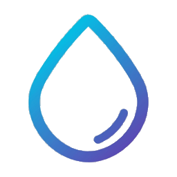

☕ On Your Clock
Active Break fires at the interval you set. Ten minutes or two hours — the delay arrives when you asked for it.
The timer waits out the break, then starts counting again. Ambient rain you leave on does not pause it.

Take a break. Let it rain.
New in 1.1 · Active Break
Active Break calls a rain delay on your workday. The rain is fake. The break is real — and it shows up on time, at an interval you choose, instead of whenever you happen to remember you needed one.
On that schedule the sky opens over the desktop. Rain and thunder build from a drizzle into a shower while clicks and typing pass straight through, so the pause can land mid-task without taking the keyboard. Look up. Breathe. Finish the sentence if you must. The delay was the point: a much-needed stop, delivered when you said it should arrive.
Turn it on in Settings → Rain Break. Pick how often it starts and how long the shower takes to reach full strength. Your hotkey sends the clouds away. Want the screen held until you are actually done? Turn off desktop interaction and the blur stays put.
Active Break fires at the interval you set. Ten minutes or two hours — the delay arrives when you asked for it.
The timer waits out the break, then starts counting again. Ambient rain you leave on does not pause it.
Rain and sound ramp from a faint start to a full shower. At full strength, lightning switches to storm timing.
Set the starting level and how many minutes the build takes. The delay gets harder to ignore as it gathers.
Leave a click-through shower on while you work. Switch from the tray Mode menu. Tune opacity, haze, brightness, and tint.
Hidden from screen sharing. It pauses on a monitor when a full-screen app is in front.
Optional flashes in every mode. During an Active Break they come more often once the rain reaches full strength.
Quiet weather most of the time. A proper storm only after the delay has fully arrived.
Real rain video layered over your blurred desktop. Intensity runs from a gentle drizzle to a downpour.
Black in the footage stays clear, so the storm sits on top of the room instead of covering it.
Wraps the monitors you choose in one rainstorm. Two screens, three — the delay covers the desk.
All screens, or a list of them. Each monitor gets its own overlay.
Rain and distant thunder fade in around the delay. Close your eyes and the office is somewhere else.
Volume follows the ramp, so the room gets louder as the shower builds.
A smooth wiper sweeps the screensaver at every video loop — or press W anytime.
Breaks leave the wiper parked. The delay is for looking up, not clearing the glass.
A countdown for a single sitting, or a daily window when the rain is allowed to start.
Those sessions still use the full screensaver. Active Break is the one that keeps the desktop live.
Blur, darkness, rain opacity, tint, and wiper. Dial the storm until it matches the room.
Active rain has its own opacity, haze, brightness, and color, separate from the screensaver.
Summon the rain, or end an Active Break, with the shortcut you set. Screensaver mode dismisses with ESC.
The combo is global. No window has to be in front for the delay to start or stop.
Click to reveal a color-cycling clock that shifts through the rainbow while you sit out the delay.
A quiet reminder of how long you have actually been still.